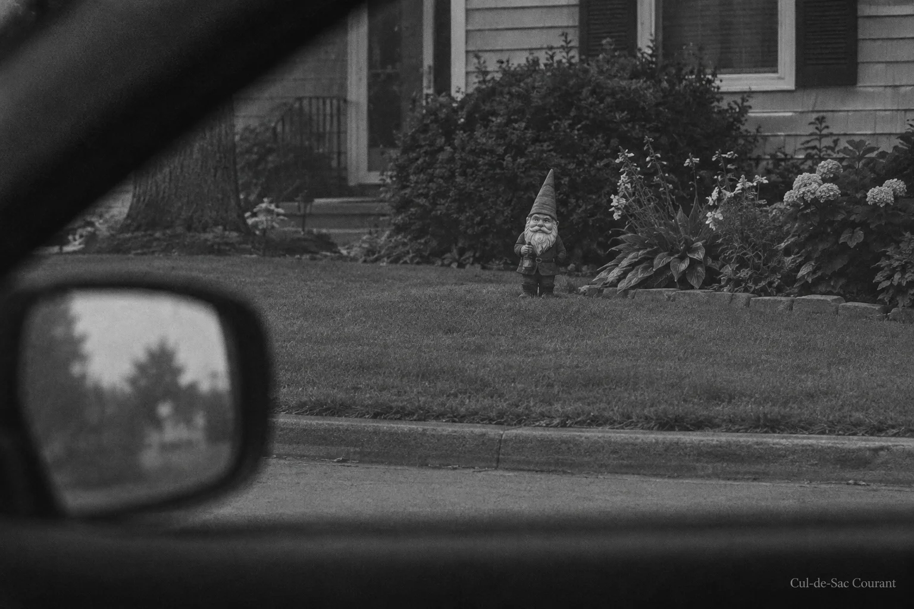

The Gnome Files • Relocation No. 32
Gnome returned, facing east; investigators call orientation "deliberate"
Old Bert reappears after eleven days, four inches from his original position and rotated approximately 90 degrees. The five-part series that was to conclude in April has not concluded, and the Courant no longer promises that it will.

BUTTERNUT COURT. The Hendersons' garden gnome, absent since the morning of September 4, was discovered Tuesday standing in the Hendersons' west flower bed, four inches southwest of his documented home position and facing east. He has faced the street since at least 2009, which predates this newspaper. The Courant has confirmed the change of orientation against 47 photographs in its gnome archive.
It is the 32nd documented relocation since March 2025, when a reader first reported that Old Bert, a 14-inch ceramic figure with a shovel, was "not where he was." It is the first relocation involving rotation, and the first preceded by a full disappearance. Eleven days is the longest Old Bert has been off the property in the modern record.
"Whoever is doing this wants us to know they can take their time now," said Dale Whitaker of No. 6, a retired police officer who reviews the Courant's evidence on an unpaid consulting basis. "That, or the gnome is settling. Ceramic does settle. But it does not settle four inches southwest and turn to face the Kowalskis'."
The Hendersons continue to decline comment. Reached Tuesday through their screen door, Gary Henderson said "it's a lawn ornament, Marla" before closing the inner door. The Courant notes, as it has before, that it has never suggested otherwise, and that the phrase "it's a lawn ornament" does not explain who is moving it.
The Courant's dew-pattern analysis, performed at 6:41 AM before the sun compromised the scene, found an undisturbed film on the gnome's hat and shoulders, indicating placement before approximately 3 AM. The lawn showed no drag marks. Whoever carried Old Bert lifted him cleanly, an argument against the raccoon theory that a segment of the readership continues to advance in letters this paper prints out of fairness and files under wildlife.
The Hendersons' porch camera, the street's only known recording device aside from the Simmons doorbell, was found to have recorded nothing between 11 PM and 5 AM. Gary Henderson attributes this to a firmware update. The Courant reports this explanation without endorsing it.
Carla Simmons of No. 5, who put Old Bert back in the flower bed herself after relocation No. 3, said the street had been calmer during the eleven-day absence, "and I didn't care for it. You don't know what the gnome is doing for this street until he's gone."
The investigation continues. Residents with information are asked to slide it under the door of No. 2, or to simply keep doing what they are doing, because the Courant is closer than they think.